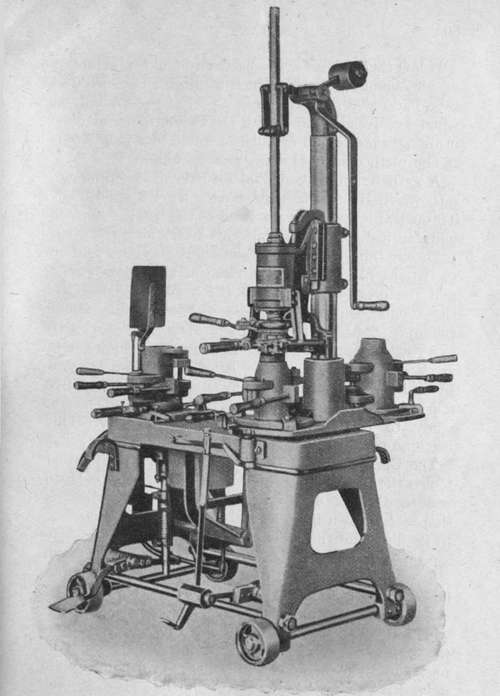

Chapter XI. The Manipulation Of Glass Glass Makers' Tools And Machines
Description
This section is from the book "Glass And Glass Manufacture", by Percival Marson. Also available from Amazon: Glass and Glass Manufacture.
Chapter XI. The Manipulation Of Glass Glass Makers' Tools And Machines
The tools used by the glass blowers are few and simple. The greater part of the crude form is produced by blowing out the hot glass into a spherical or pear-shaped bulb and regulating the size and thickness by gathering more or less material. The tools are mainly employed in finishing and shaping this bulb into the desired form, such as shearing, forming the neck spout, crimpling, and sticking on the handles to the various shapes made.
According to the type of the goods manufactured, different manipulative methods in forming the articles are adopted in various works.
The best English table glassware is mostly hand-made blown ware, generally entirely executed by the handicraft of the workman without the aid of moulds to form any part of the articles, and a considerable amount of skill and practice is necessary before the workman is competent enough to shape a number of articles exactly to the form of his model. It is astonishing to notice the skill and precision with which a workman produces wine glasses one after another, so uniform that one cannot trace any dissimilarity between them.
A second class, or cheaper form, of tableware is made by blowing the sphere or bulb of hot glass within a mould, to give some part, or the whole form, of the desired article. If only a portion of the intended shape is thus formed by the mould, it is afterwards finished by hand with tools. This is the general continental method of working, and has only been partially adopted by this country for making tableware. Where a number of articles of one shape have to be produced, this is by far the most economical method. Glass tumblers, honey pots, and rose bowls illustrate this class of ware.
Another class of tableware produced by a method of pressing the form is known as " Pressed glassware." The hot metal is gathered from the pot and a portion cut off, and allowed to fall into an iron mould fixed within a lever press, which carries a plunger fitting within the mould formed to shape the interior and exterior, with the thickness of the glass as the intermediate space between them. As the hot glass is introduced, the workman brings down the lever arm and the plunger presses the hot metal to shape. The plunger is then released and the mould reversed, turning out the pressed form of glass, which is then carried away to be fire-polished or further manipulated with tools before it goes to the lehr. The case or mould portion is made in two halves, to facilitate the removal of the hot glass after being pressed. Pressed glass tableware can be recognised by the presence of seams, showing these divisions of the mould. Many exquisite designs imitating cut glass tableware are executed in pressed glassware. The moulds are a very expensive item, as there is much tool work in cutting the patterns and refacing them after prolonged use. In making pressed goods, an oily, carbonaceous liquid is used to give the moulds some protection and prevent the oxidisation of the iron. This liquid is from time to time applied, as the work of pressing proceeds, by mopping the interior of the mould with a mop dipped in the preparation.
Another process in glassmaking is that of bottle-making by automatic machinery, in which the glass worker does little but gather the requisite quantity of glass from the pot and place it into the revolving clips of a bottle-making machine, which does the work of formation, by the aid of compressed air delivered from a supply main. This is largely of American introduction, and is the method adopted in making common bottles. In some cases the bottle neck may be finished by a hand tool after a mould has done its part of forming the bottle. Modern machines have been perfected to do the whole work of gathering the metal, forming the shape, and completing the bottle; a number of arms travelling round a track carry the mould forms, which alternately dip into water to keep them cool, open to receive the hot metal, close, deliver a requisite pressure of air to extend the hot glass within the mould, and then deliver the bottle on to a travelling belt, which takes them to be annealed.
In the manufacture of bottles by machines, hand labour is practically eliminated as far as the actual making of the bottle is concerned. The bottle-making industry is undergoing great changes by the introduction of such machinery. In some plants a ten-armed machine will produce automatically 120 gross of 16 oz. bottles in twenty-four hours, at an average cost of Is. 6d. a gross.
Owen's Bottle-making Machines are of this type. Such machines produce 700 bottles an hour, according to their size and the number of arms fitted to the machine.
As an illustration of the less complicated bottle-making machine, " The Harlington " may be described.
This machine consists principally of a table, on which is arranged on the left-hand side a parrison mould, and on the right-hand side a column with a revolving table carrying two finishing moulds.
" The Harlington " Bottle-Making Machine
By permission of Mel in & Co.
" The Harlington " Bottle-Making Machine
Below the table, near the parrison mould, is arranged an air cylinder, through which a piston runs, operated by a hand lever. On the upper part of the column, on which revolves the table with the two finishing moulds, is also arranged an air cylinder operated by a hand lever.
The method of working is now as follows:
A gatherer puts the metal into the parrison mould, into which it is sucked by moving the left-hand lever. Through this operation the head of the bottle is formed and finished. By reversing the lever, air enters the parrison, thus blowing the same out to the height of the parrison mould. The parrison mould is now opened and the parrison hanging in the head-mould held by the tongues is placed under the blowing cylinder above the open finishing mould. Now the latter is closed, and by moving the lever, the bottle is blown and finished. Whilst this last operation is being effected by a boy, the table is revolved and the previously finished bottle is taken out and another parrison is made ready to be handled in the described way. This machine produces 200 bottles per hour.
Continue to:
Tags
glass, manufacturing technology, furnace, glassware, wine glass